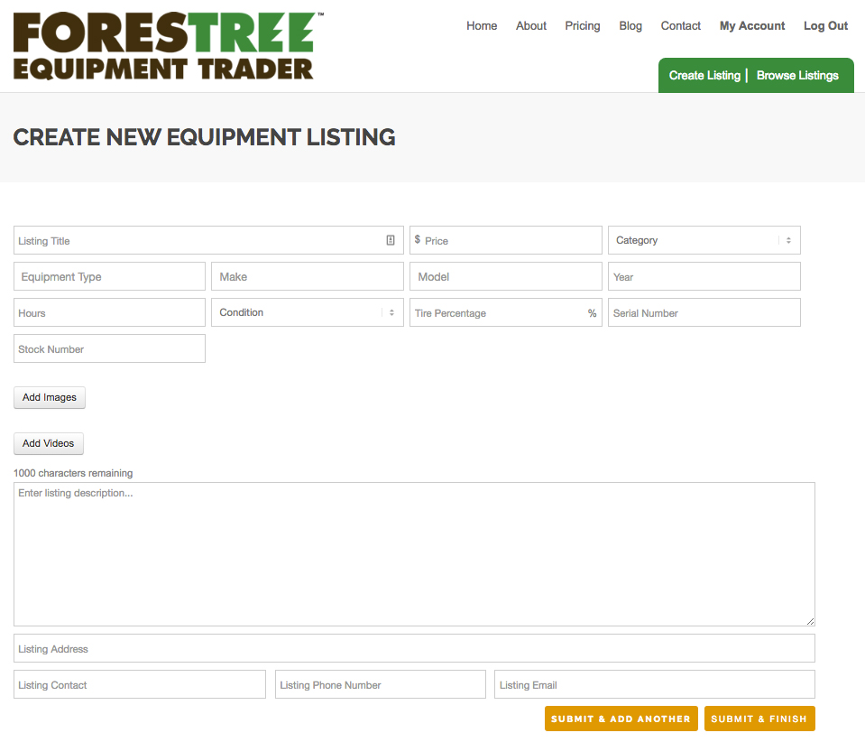

{kind=link}
"ForesTree Equipment Trader is the outgrowth of Southern Loggin’ Times, a tabloid magazine founded in 1972 that soared to treetop popularity over the following decades. One reason for its towering popularity is its extensive listing of quality pre-owned forestry equipment found in each monthly issue. FET builds on this industry leading position, creating the industry’s most extensive used equipment and parts selection. 60% of the nation's annual timber harvest occurs in the U.S. South, where the majority of new forestry equipment is sold each year, and where the population of forestry equipment—particularly feller-bunchers, skidders, loaders and attachments—is the most concentrated. ForesTree Equipment Trader is a marketplace that connects you with buyers and sellers across the nation offering machinery, equipment, parts, and much more for most all makes, models and years of forestry equipment."
I was approached by Hatton Brown Publishers to create a web-based classifieds platform for used forestry equipment. Advertisers from the company's publication, Southern Loggin' Times, would need to be able to purchase a membership and create their own used equipment listings. The platform needed to be able to be maintained using a content management system.
I created the website using Wordpress, creating a theme from scratch. The homepage, pictured above, features a slider with a column of search options embedded. Visitors can search listings posted by category, make, model, and price.

If a visitors uses the search element on the homepage, they will be redirected to the equipment listing page, pictured above. The listings will be filtered based on the search options chosen by the visitor. This page lists all equipment listings posted by advertisers. The search bar on the left allows visitors to search listings by keyword, date, recently created, price, category, class, make, model, condition, year, hours, tire percentage, and company. Listings can be viewed as a grid or list. AJAX was used to create seamless search functionality for the visitor.
{kind=link}
A custom post type was created to incorporate the used equipment listing. Advertisers are given an account upon purchase of a subscription. I created a front-end form for advertisers to create their own listings, allowing the advertiser to have their listing up quickly as well as edit any past listings. Each subscription has certain limitations on photos, videos, and total listing amount.
{kind=link}
The picture above shows the account page for ForesTree Equipment Trader. On this page, an advertiser can view all of the listings they have posted as well as the amount of page views for each listing. An advertiser can edit, delete or mark their listing as sold as well. In the sidebar, an advertiser can see how many listings they have left to use and edit their account information.
{kind=link}
A custom page template was created to display each listing with details. The main slider displays all images and videos. Messages can be sent to the seller with the contact form. In the sidebar, additional advertiser info is shown as well as related ads.